Turistas se rindieron ante la ciudad de piedra, Choqolaqa
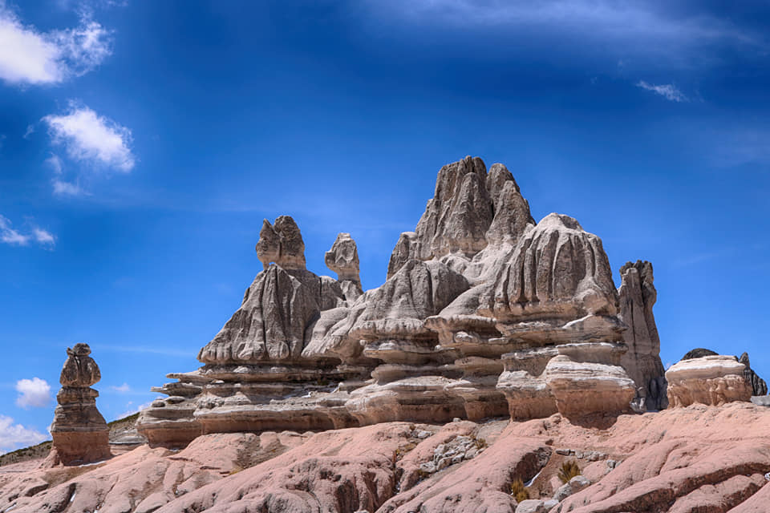
Este histórico lugar, que se compone de majestuosas rocas, es conocido
como la antigua Arequipa.
Según su historia ancestral, Choqolaqa estaba formada por grandes
palacios, calles, avenidas y zoológicos.
Sin embargo, cuentan los lugareños que esta antigua civilización
desobedeció a los dioses, quienes
convirtieron esta ciudad en piedra. Para los pueblos nativos, esta
sería la explicación del origen de
esta tierra árida y de la aparición de sus rocas.
Asimismo, algunas de las personas que han tenido el privilegio de
conocer Choqolaqa, aseguran que
cada parte de este bosque es un mundo diferente. Al parecer, cada
formación rocosa revela los
secretos de la antigua civilización que habitaba en esta zona. Por
ello, llegar a esta parte de Arequipa
es como realizar un viaje en el tiempo.
Por su parte, Choqolaqa está ubicada en el distrito de Tisco, un
hermoso territorio que destaca
por sus inigualables paisajes naturales y sus valiosos monumentos,
como su catedral, que fue
construida a mediados del siglo XVIII.
Disfruta de la tradición cultural de Choqolaqa
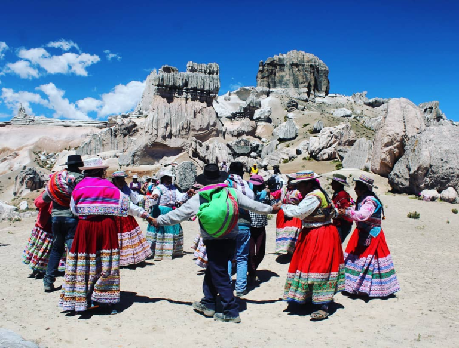
Al ser un territorio ancestral, este es centro de rituales sagrados y
festividades de agradecimiento
a la madre tierra. Una de las fiestas más representativas e
importantes que se realizan en esta
ciudad de piedra es el Festival turístico Tisco – Choqolaqa.
Este evento cultural y religioso se lleva a cabo una vez al año en
Choqolaqa y busca resaltar las
tradiciones, artesanías y atractivos de este territorio. Además,
dentro de este festival, los visitantes
tendrán la posibilidad de compartir junto a la población nativa de su
cultura, gastronomía y
bebidas típicas.
Igualmente, las comunidades hacen una pequeña muestra de sus
tradicionales bailes. Para ello,
se presentan con sus coloridos trajes típicos fabricados por ellos
mismo.
Otro de los atractivos de este evento es la muestra de artesanías,
donde participan productores
de alpaca de distintos lugares del país. Asimismo, en este espacio,
los asistentes pueden disfrutar
de un delicioso plato de trucha frita, chicharrón de alpaca y torrejas
de quinua.
¿Cuáles son los mejores planes para realizar en Choqolaqa?
Uno de los planes imperdibles en esta zona es realizar trekking o
excursionismo, una actividad
con la que podrás conocer los diferentes espacios de este territorio.
Durante el recorrido verás las
imponentes piedras, las cuales tiene unas singulares formas. Por este
motivo, este es un escenario
ideal para realizar una sesión fotográfica.
Para este plan es recomendable ir en compañía de un guía,
preferiblemente que sea de la
comunidad, ya que ellos conocen bien la zona. Además, junto a ellos,
conocerás las diferentes
historias sobre este territorio, las cuales son realmente
interesantes. En pocas palabras, podrás
realizar un divertido viaje en el tiempo.
Por otro lado, puedes aprovechar para participar de algunos de los
rituales de agradecimiento
que los pueblos indígenas ofrecen a la madre tierra.
fiorella2700
25 de abril, 2021
Blog
Deja un comentario
Editar
Arequipa: Conoce el fantástico manantial Mamacocha en Ayo
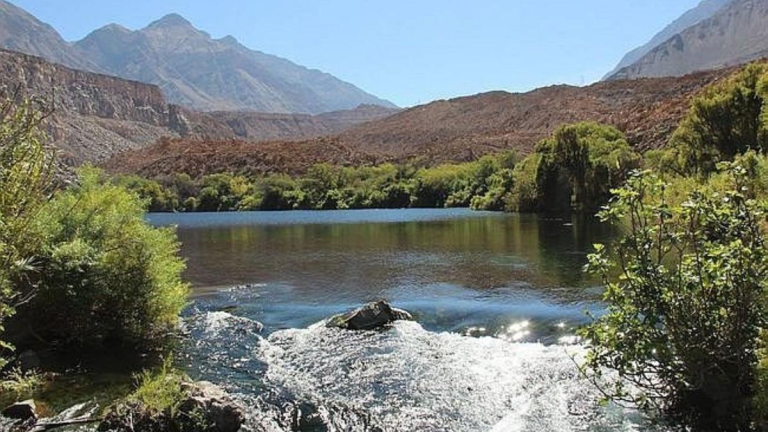
El manantial de Mamacocha está ubicado en la provincia de Castilla.
Sus aguas albergan
camarones, nutrias y muchas historias de sirenas que cautivan y son la
maldición de los
pescadores que se aventuran a sus aguas durante las madrugadas. Sin
duda, este es un lugar
fantástico que debes incluir si haces turismo en Arequipa.
Su origen se remonta hace miles de años y se debió a las constantes
erupciones volcánicas que al
solidificarse represaron las aguas subterráneas, las mismas que
salieron a flote a una distancia de
17 kilómetro del distrito de Ayo. Ahora esta obra de la naturaleza es
un orgullo para quienes
nacieron en el distrito de Ayo.
¿ Cómo llegar?
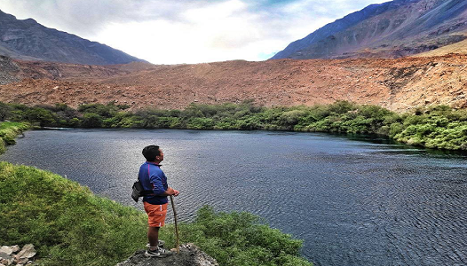
Si deseas visitar este paraíso, debes abodar un bus en la Terminal
Terrestre de Arequipa con
destino a Andagua, ubicado en la provincia de Castilla-Arequipa. El
viaje dura 8 horas.
En la plaza de Andagua encontrarás vehículos con destino al distrito
de Ayo, a 45 minutos de
distancia. Desde Ayo tienes dos opciones para llegar al manantial:
Primero, podrías abordar un
vehículo menor (15 minutos de viaje) o realizar una caminata de 35
minutos acompañado de un
guía turístico que cobra 20 soles por sus servicios.
Cabe destacar que el ingreso al manantial es completamente libre, pero
se pide a los visitantes
cuidar el paisaje y no contaminarlo con basura.
fiorella2700
25 de abril, 2021
Blog
Deja un comentario
Editar
Conoce Cotahuasi, una maravilla por descubrir
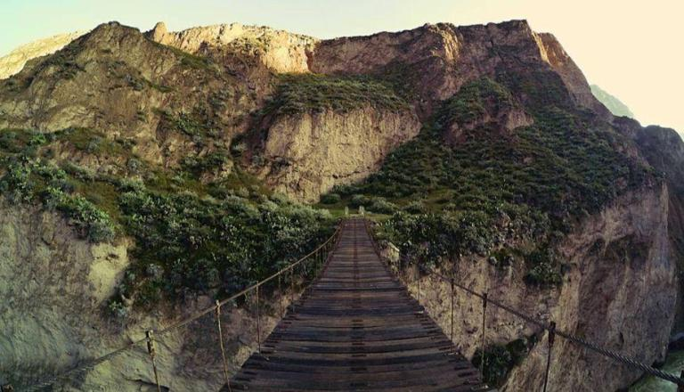
El primer contacto visual con el cañón lo dejará boquiabierto, dada la
magnitud de esta enorme
formación natural que el río abrió entre las montañas Coropuna y
Solimana, y que es considerado
como el tercer cañón más profundo del planeta con 3.535 metros.
La ciudad de Cotahuasi, que significa en español reunión de casas, es
el epicentro de las
actividades turísticas en la zona. Aquí se puede visitar la iglesia
colonial de Nuestra Señora de la Concepción, así como el
campanario de Santa Ana y el mirador. Los amantes de la aventura
pueden practicar canotaje, kayak, así como rapel.
Y si desea compartir la experiencia de dormir en una vivienda local,
algunas familias ofrecen
hospedaje.
¿Los tres imperdibles de Cotahuasi?
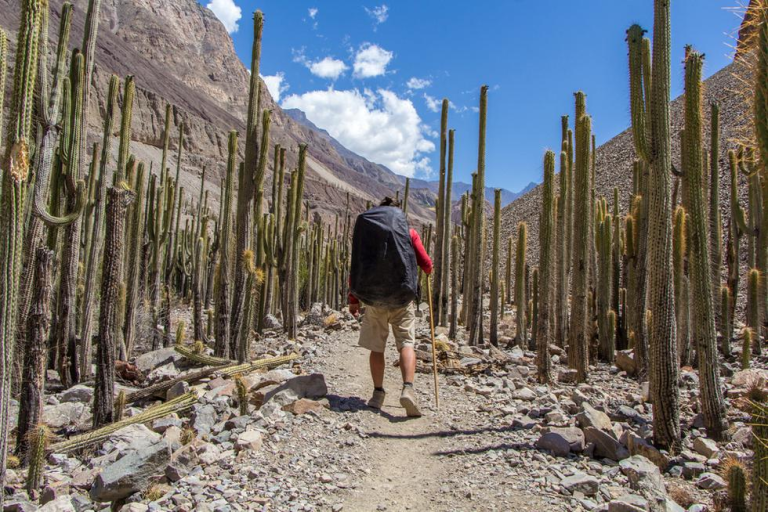
El bosque de cactáceas, conocido como Judío Pampa
En sus 48 hectáreas alberga variedades de cactus, como las
columnares, que llegan hasta los 15 m de altura, el sapanhuarmi, la
chura, el sanqui, entre una larga lista de especies catalogadas como
únicas.
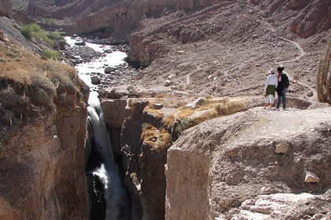
La Catarata Sipia
La catarata de Sipia (500 m, siete caídas de agua). Si bien la
cascada se encuentra en el distrito de Toro, forma parte de los
atractivos turísticos del cañón de Cotahuasi.
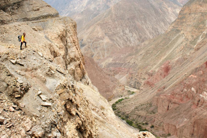
El mirador de Locrahuanca
Desde donde se aprecia la magnitud del valle y del “cañón de las
maravillas”
fiorella2700
25 de abril, 2021
Blog
Deja un comentario
Editar
Conoce el Castillo de Forga un fascinante recinto abandonado en
Arequipa
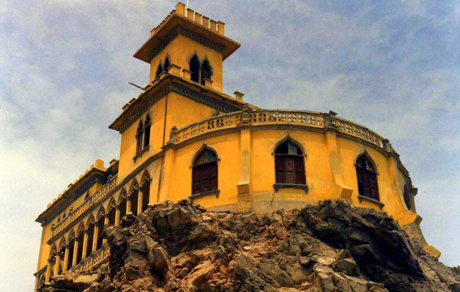
El Castillo Forga, ubicado en la ciudad de Mollendo, capital de la
provincia de Islay (Arequipa), es
un hermoso monumento construido por encargo del empresario textil
arequipeño de ascendencia
española, José Miguel Forga. Al cual entre 1908 y 1910 se le dio una
arquitectura
neogótica, siendo autor del proyecto el arquitecto arequipeño Gerardo
Cornejo Iriarte.
La construcción es de concreto armado y aún se pueden notar los rieles
usados para darle
fortaleza a la estructura. Un puente de fierro instalado sobre la
línea ferroviaria, que parte desde
Islay hacia todo el sur del país, era el camino de ingreso a este
castillo. Desde sus balcones de
concreto puede apreciarse la costa de Mollendo, e incluso, las playas
de Mejía.
Construido en 1908, el Castillo de Mollendo (Arequipa), conocido en
sus mejores épocas como “la casa blanca”, pasó de ser propiedad
privada de la familia Forga a comienzos del siglo XX, a manos
del Estado.
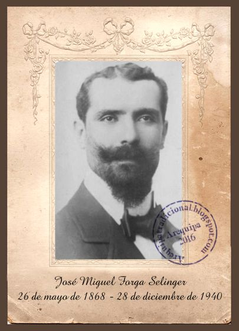
El castillo Forga fue construido por José
Miguel Forga Salinger, empresario arequipeño
dedicado a la industria textil y hombre de
fuertes inclinaciones artísticas.
Después de un extenso viaje por Europa e
impresionado por la variedad arquitectónica
existente en el Viejo Continente, Forga volvió
con la idea de construir una enorme casa con
características arquitectónicas de estilo
medieval, árabe y veneciano.
fiorella2700
25 de abril, 2021
Blog
Deja un comentario
Editar
Descubre la maravillosa fortaleza de Huasicac en Manchahuay
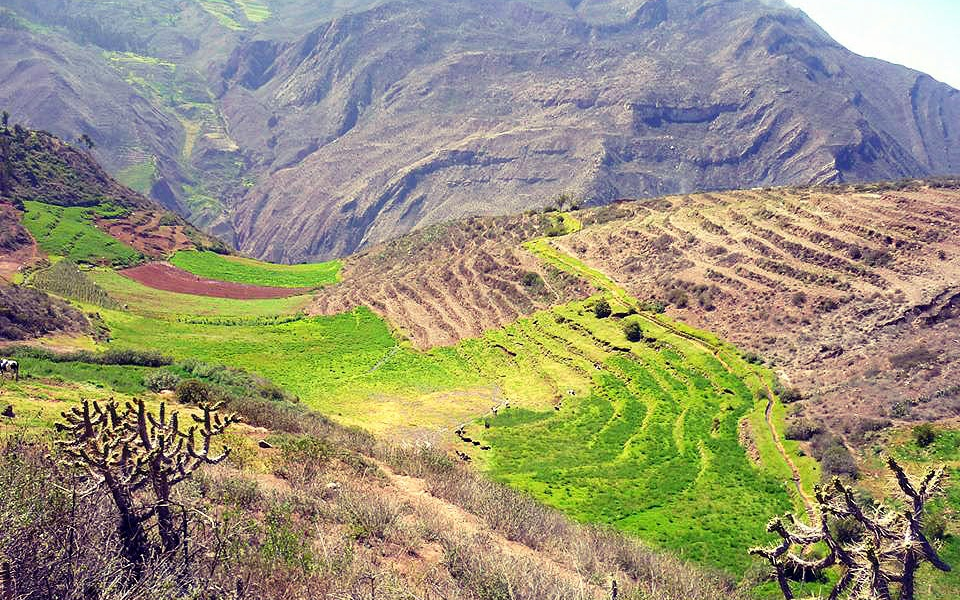
La hacienda Huasicac es un pueblo anexo al distrito de Machahuay.
Dedicado a la ganadería
,agricultura, como no tiene acceso de carretera para el transporte
rápido de algunos productos
como la leche, esta es transformada en queso y luego transportado en
animales de carga al
distrito de Machahuay.
Puede apreciarse muros muy altos y con terminación piramidal a dos
aguas. Las estructuras
llegan a medir 17 metros en unos casos mientras en ambientes más
pequeños tienen no menos
de 3 metros hasta el techo.
Las piedras de los muros tienen tonalidades de blanco a marrón pasando
por el beige y en
algunos casos se aprecia el amarillo. Grandes piedras oscuras hacen de
travesaños en los techos
y marcan los dinteles.
Toda la construcción debe ocupar más de 3 mil metros cuadrados de área
y evidencia no solo
casas habitación sino patios espaciosos, zona de reuniones y lo más
importante, del lado derecho
del conjunto arquitectónico, se aprecia un abismo vertical de por lo
menos 500 metros
de profundidad.